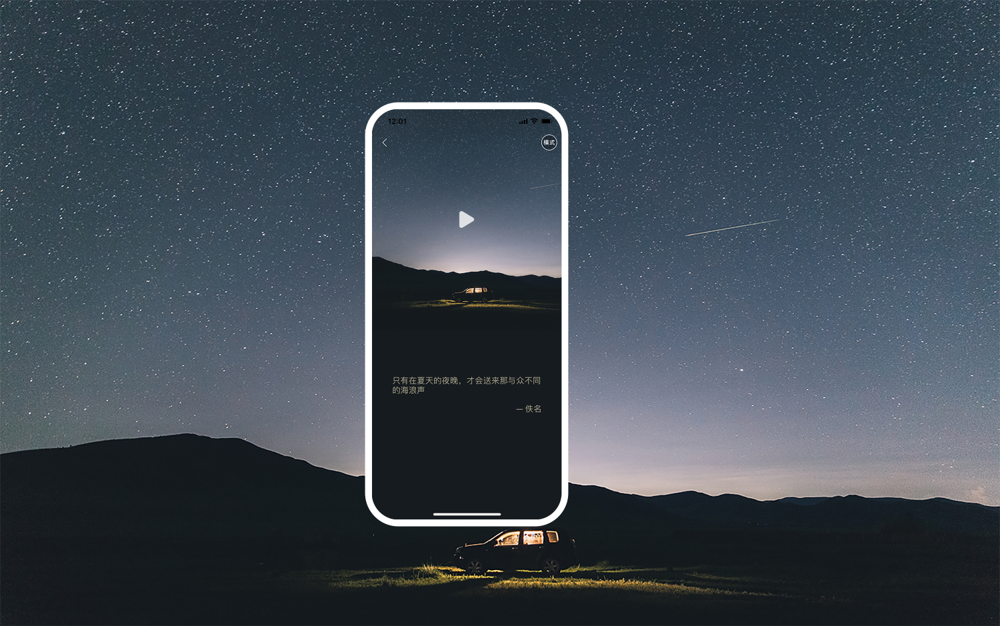

声昔是小说作家，博士留学生，校园学霸都十分喜爱、基于灵感发现的“潜意识发掘器”。 作为当前最POPULAR的灵感捕捉器，声昔ER通过短短10秒的“灵感捕捉”就能发现自己不曾注意到的灵感， 打开惊喜的潜意识之门。 有思想的年轻人在此深度交流，捕捉生活中无处不在的小灵感，记录每个有趣的经历，分享自己的新观点， 吸收陌生人的“有趣发现”，通过“灵感簿”碰撞每一份独特灵感，很多人因此成为了学友，甚至知己。 特点介绍： 1.语音捕捉灵感－让你快速发现深藏潜意识的灵感。 2.灵感操场－ 随心分享每时每刻的新脑洞，让灵感互相碰撞激发。 3.社团即时交流－和价值观相同的伙伴，随性分享彼此的想法，时刻让你惊讶。 适合对象： ·喜欢自我对话，随心随性想说就说 ·脑洞超大的你，在声昔能遇到自己的同类 ·内心丰富，捕捉心中闪过的思路，纸上没有墨水的痕迹，但灵感已悄悄降临 知乎大V推荐的记录反思簿，开启思维进化之路！ 立即下载更有机会赶上本周读书分享，不错过每一本好书！ 不论你是创意高手，网文作家，大学生还是社畜程序猿，你都可以在这里结识志趣相同的一群人，接触到和 你同频人的灵感，灵感不会枯竭！你不曾，也永远不会缺乏灵感！